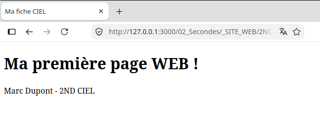
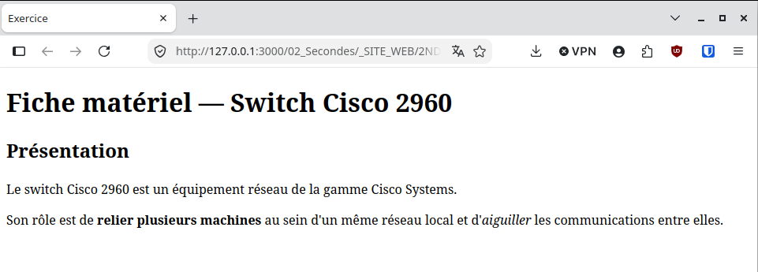
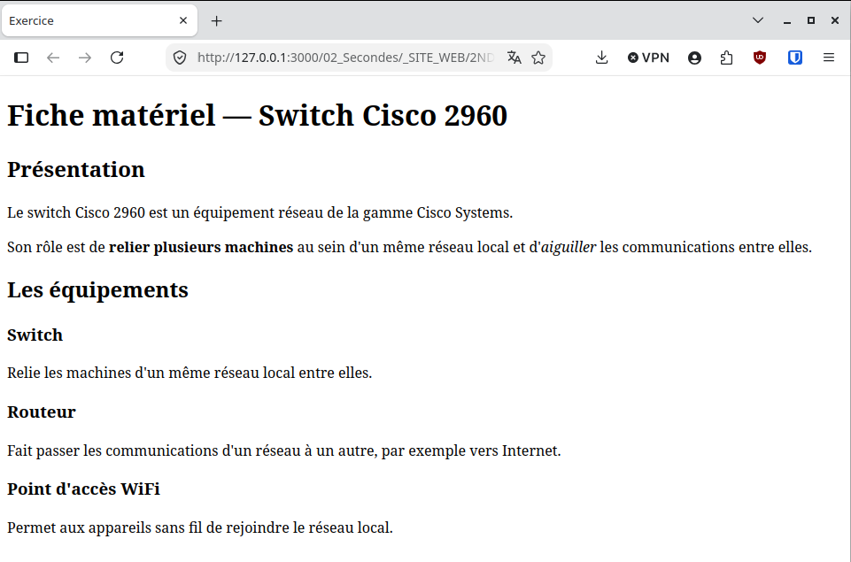
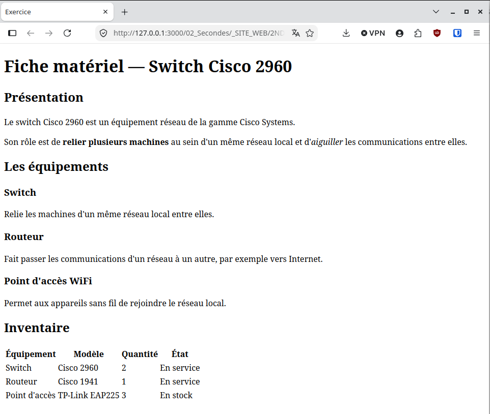
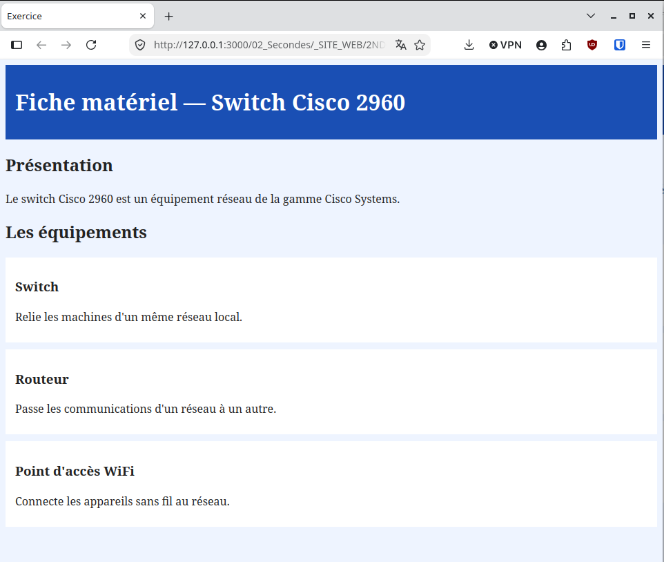
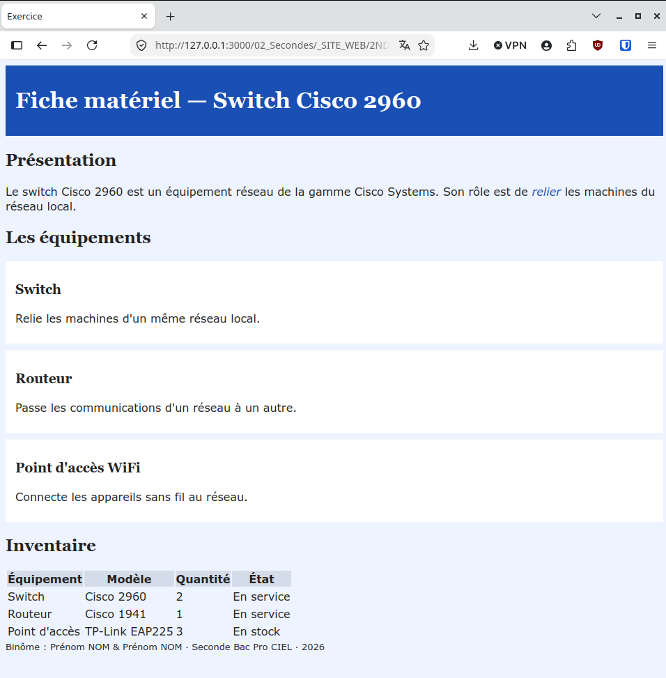
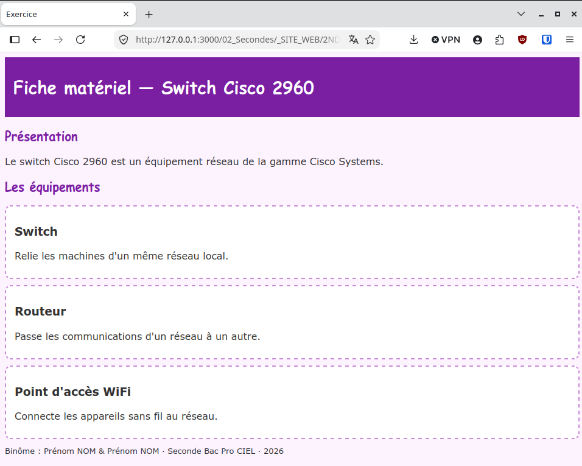

L'usage de l'IA n'est pas autorisé pendant cette séance.
N'hesitez pas à utiliser le cours ou le site : w3schools pour vous aider dans la découvertes des balises html.
Créer un dossier web dans vos documents. Ouvrir Visual Studio
Code, puis Fichier → Ouvrir le dossier → sélectionner web.
Nouveau fichier (Ctrl+N), l'enregistrer sous fiche.html
dans le dossier web. L'extension .html indique à VS Code (et au
navigateur) qu'il s'agit d'une page web : la coloration syntaxique s'active.
Taper ! (point d'exclamation) puis Tab : VS Code génère le squelette
complet de la page. Compléter le lang="fr" et le
<title> : « Ma fiche CIEL ». Enregistrer (Ctrl+S),
puis ouvrir le fichier dans le navigateur (clic droit → Reveal in File Explorer →
double-clic). Garder l'éditeur et le navigateur côte à côte : chaque
sauvegarde, un rechargement (F5).
📌 [CAPTURE 1] Votre squelette VS Code + navigateur : voir document de captures.
Dans le <body>, ajouter :
<h1> : « Fiche matériel — Switch Cisco 2960 » ;<h2> : « Présentation » ;<p> : une phrase de description du switch et une phrase sur son rôle
(relier des machines en réseau) ;<p> avec un mot en <strong> (important) et un mot en
<em> (accentué).

On organise maintenant la fiche en blocs sémantiques. Réorganiser le code pour obtenir :
<header> qui contient le <h1> ;<section> « Présentation » (avec son <h2> et les
paragraphes de l'exercice 1) ;<section> « Les équipements » qui contient trois
<article>, un par équipement : un switch, un routeur, un point d'accès WiFi.
Chaque <article> a un <h3> (nom) et un
<p> (rôle en une phrase).

Quelle est la différence entre une <section> et un
<article> ? Pourquoi trois <article> dans la même
<section> ?
Ajouter une <section> « Inventaire » contenant un
<table> de 4 colonnes et 4 lignes de données :
<tr> = une ligne, <th> = cellule d'en-tête,
<td> = cellule de données ;

Combien de balises <td> contient votre tableau en tout ? Montrez le calcul.
Ajouter un <footer> : votre noms de binôme, la mention « Seconde Bac Pro CIEL » et
l'année. Vérifier la structure complète du document : header → 3
section → footer. Faire valider la structure par le professeur.

Combien de balises <section> contient la page ?
Dans VS Code : nouveau fichier, enregistrer sous style.css dans le même dossier
web. Un fichier CSS ne contient que des règles
sélecteur { propriété: valeur; } — pas de balise HTML.
Dans le <head> de fiche.html, ajouter :
<link rel="stylesheet" href="style.css">
Vérification immédiate : dans style.css, taper
body { background: lightyellow; }, enregistrer, recharger : le fond devient
jaune pâle. Le lien fonctionne !
Compléter style.css, étape par étape (enregistrer + F5 après chaque règle) :
body : background en bleu très clair (ex. #eef4ff) et
color en gris foncé (ex. #222) ;
header : background bleu foncé (ex. #1a4fb4) et
color: white ;
article : background: white — les fiches ressortent sur le fond ;th : background gris clair.Les couleurs s'écrivent en anglais (white, navy…) ou en code
hexadécimal #rrggbb : deux chiffres par canal (rouge, vert, bleu), de 00 à FF. Testez
le sélecteur de
couleurs du MDN pour choisir vos teintes.

body : font-family: Verdana, Arial, sans-serif; — on donne plusieurs
polices de secours, séparées par des virgules ;h1, h2, h3 : font-family: Georgia, serif; — les titres en police à
empattements, le corps en police sans empattements : contraste visuel classique du web ;em : color: #1a4fb4; — les mots accentués passent en bleu.body : font-size: 16px; — la taille de référence ;h1 : font-size: 32px; · h2 : 24px ·
h3 : 19px ;
footer : font-size: 13px; — discrètement plus petit.
Pourquoi les titres doivent-ils être plus grands que le texte du corps ? Quel rôle joue la taille dans la lecture d'une page ?
Sans toucher au HTML, uniquement dans style.css : changez la palette de couleurs
(fond, header, articles), la police des titres, et les tailles, pour donner à la fiche
votre identité visuelle. Interdiction de tout casser : si le rendu devient
illisible, c'est raté ! Faites valider par le professeur.
Validation : ____________________

Le fichier fiche.html contient le ____________ et la ____________ de la page. Le
fichier style.css contient son ____________ . Le lien entre les deux se fait avec la
balise <____________> placée dans le <____________>.
a) <article> s'utilise toujours seul, jamais dans une
<section> : VRAI / FAUX
b) En CSS, font-size: 32px; rend le texte plus grand que
font-size: 16px; : VRAI / FAUX
c) La couleur #1a4fb4 est composée de rouge, vert et bleu : VRAI / FAUX
d) Sans CSS, une page HTML reste illisible pour le navigateur : VRAI / FAUX
Les deux fichiers (fiche.html et style.css) + les réponses aux questions
1 à 7.